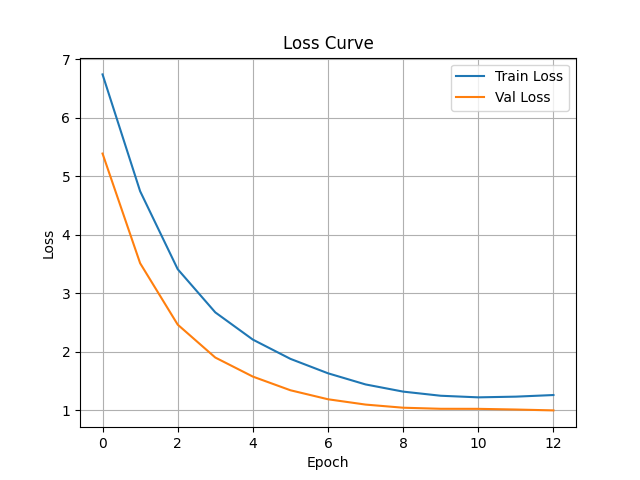
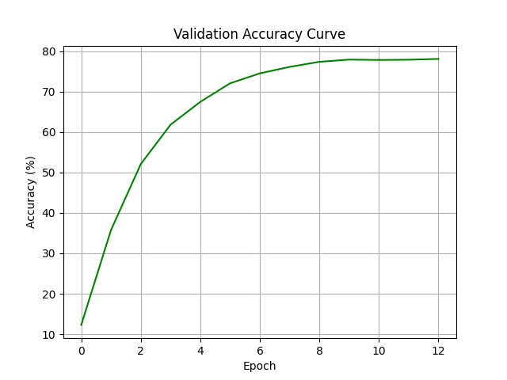
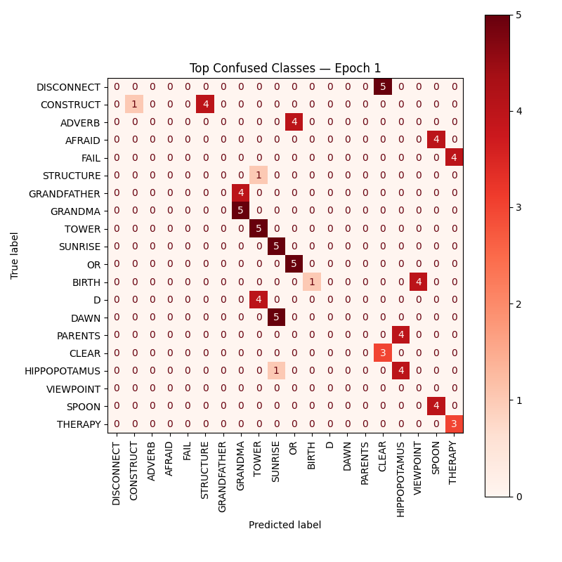
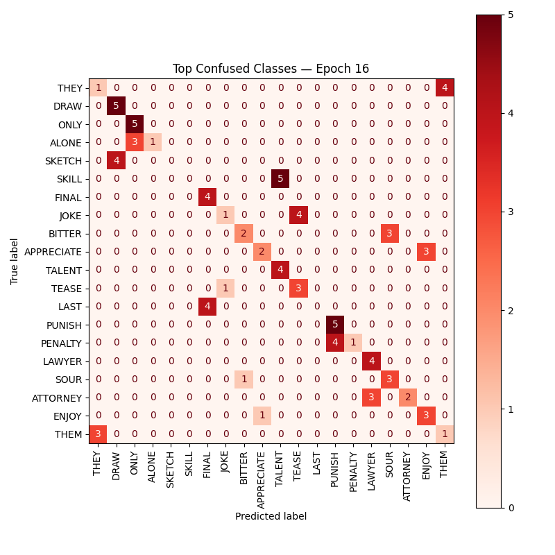

HandyReader
An end-to-end system that turns signed American Sign Language sentences into English subtitles. It tracks the hands, recognizes each signed word with a recurrent network, then uses a language model to turn the words into a fluent sentence.

Results
Most prior work recognizes fingerspelled letters or a few dozen signs. HandyReader works at the word level from continuous video, which is what full sentence translation needs.
The pipeline
- Segment. A signed sentence video is split into word-level clips.
- Track. MediaPipe Hands finds the hands, the frame is cropped dynamically around them, and 21 3D keypoints are extracted per frame.
- Recognize. A GRU classifies each clip's keypoint sequence into an ASL gloss, the written label for a sign.
- Translate. LLaMA 3.2 turns the gloss sequence into an English sentence, so STORE I GO YESTERDAY becomes "I went to the store yesterday."
The model
Each clip is 32 frames of 21 joints in 3D, flattened to 63 values per frame. A two-layer GRU with 128 hidden units reads the sequence, and its final hidden state goes through batch normalization, dropout, and a linear layer to pick one of 2,000 signs.
We chose a GRU because signs are defined by motion over time, and GRUs capture that while staying lighter and faster to train than LSTMs. It clearly beat a 1D convolutional baseline.
The dataset has 60,000 sequences, balanced at 40 training, 5 validation, and 5 test samples per sign. To make the model robust to different signers, training data was augmented with jitter, noise, spatial shifts, and time warping between 0.75 and 1.25 times speed, then smoothed over time with a Gaussian filter.
What it learned


The most confused pairs tell the story. Early in training, mistakes were random, like PARENTS for HIPPOPOTAMUS. By epoch 3, the model only confused signs that look or mean alike, such as TEACHER and PROFESSOR, or JOURNEY and TRIP. A few pairs, like SKETCH and DRAW or SKILL and TALENT, stayed hard throughout, because the signs themselves are nearly identical.


My part
I built the pipeline that segments continuous signing into sentences and words, which made it possible to evaluate the system at both levels. I also ran the early evaluation of pose extractors, comparing MediaPipe Hands and ViTPose, which set the keypoint approach the final model is built on.
Arunima Srivastav led the GRU classifier and training pipeline. Daniel Reichfeld built the first classifier versions and the LLaMA translation script.